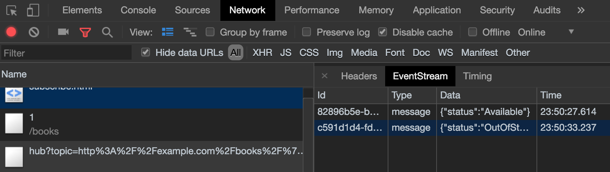

Pushing Data to Clients Using the Mercure Protocol¶
Being able to broadcast data in real-time from servers to clients is a requirement for many modern web and mobile applications.
Creating a UI reacting in live to changes made by other users (e.g. a user changes the data currently browsed by several other users, all UIs are instantly updated), notifying the user when an asynchronous job has been completed or creating chat applications are among the typical use cases requiring “push” capabilities.
Symfony provides a straightforward component, built on top of the Mercure protocol, specifically designed for this class of use cases.
Mercure is an open protocol designed from the ground to publish updates from server to clients. It is a modern and efficient alternative to timer-based polling and to WebSocket.
Because it is built on top Server-Sent Events (SSE), Mercure is supported out of the box in most modern browsers (Edge and IE require a polyfill) and has high-level implementations in many programming languages.
Mercure comes with an authorization mechanism, automatic re-connection in case of network issues with retrieving of lost updates, a presence API, “connection-less” push for smartphones and auto-discoverability (a supported client can automatically discover and subscribe to updates of a given resource thanks to a specific HTTP header).
All these features are supported in the Symfony integration.
Unlike WebSocket, which is only compatible with HTTP 1.x, Mercure leverages the multiplexing capabilities provided by HTTP/2 and HTTP/3 (but also supports older versions of HTTP).
In this recording you can see how a Symfony web API leverages Mercure and API Platform to update in live a React app and a mobile app (React Native) generated using the API Platform client generator.
Installation¶
Installing the Symfony Component¶
In applications using Symfony Flex, run this command to install the Mercure support before using it:
1 | $ composer require mercure
|
Running a Mercure Hub¶
To manage persistent connections, Mercure relies on a Hub: a dedicated server that handles persistent SSE connections with the clients. The Symfony app publishes the updates to the hub, that will broadcast them to clients.

An official and open source (AGPL) implementation of a Hub can be downloaded as a static binary from Mercure.rocks.
Run the following command to start it:
1 | $ ./mercure --jwt-key='!ChangeMe!' --addr='localhost:3000' --allow-anonymous --cors-allowed-origins='*'
|
Note
Alternatively to the binary, a Docker image, a Helm chart for Kubernetes and a managed, High Availability Hub are also provided by Mercure.rocks.
Tip
The API Platform distribution comes with a Docker Compose configuration as well as a Helm chart for Kubernetes that are 100% compatible with Symfony, and contain a Mercure hub. You can copy them in your project, even if you don’t use API Platform.
Configuration¶
The preferred way to configure the MercureBundle is using environment variables.
Set the URL of your hub as the value of the MERCURE_PUBLISH_URL env var.
The .env file of your project has been updated by the Flex recipe to
provide example values.
Set it to the URL of the Mercure Hub (http://localhost:3000/.well-known/mercure by default).
In addition, the Symfony application must bear a JSON Web Token (JWT) to the Mercure Hub to be authorized to publish updates.
This JWT should be stored in the MERCURE_JWT_TOKEN environment variable.
The JWT must be signed with the same secret key as the one used by
the Hub to verify the JWT (!ChangeMe! in our example).
Its payload must contain at least the following structure to be allowed to
publish:
1 2 3 4 5 | {
"mercure": {
"publish": []
}
}
|
Because the array is empty, the Symfony app will only be authorized to publish public updates (see the authorization section for further information).
Tip
The jwt.io website is a convenient way to create and sign JWTs. Checkout this example JWT, that grants publishing rights for all topics (notice the star in the array). Don’t forget to set your secret key properly in the bottom of the right panel of the form!
Caution
Don’t put the secret key in MERCURE_JWT_TOKEN, it will not work!
This environment variable must contain a JWT, signed with the secret key.
Also, be sure to keep both the secret key and the JWTs… secrets!
Basic Usage¶
Publishing¶
The Mercure Component provides an Update value object representing
the update to publish. It also provides a Publisher service to dispatch
updates to the Hub.
The Publisher service can be injected using the
autowiring in any other
service, including controllers:
// src/Controller/PublishController.php
namespace App\Controller;
use Symfony\Component\HttpFoundation\Response;
use Symfony\Component\Mercure\PublisherInterface;
use Symfony\Component\Mercure\Update;
class PublishController
{
public function __invoke(PublisherInterface $publisher): Response
{
$update = new Update(
'http://example.com/books/1',
json_encode(['status' => 'OutOfStock'])
);
// The Publisher service is an invokable object
$publisher($update);
return new Response('published!');
}
}
The first parameter to pass to the Update constructor is
the topic being updated. This topic should be an IRI
(Internationalized Resource Identifier, RFC 3987): a unique identifier
of the resource being dispatched.
Usually, this parameter contains the original URL of the resource transmitted to the client, but it can be any valid IRI, it doesn’t have to be a URL that exists (similarly to XML namespaces).
The second parameter of the constructor is the content of the update. It can be anything, stored in any format. However, serializing the resource in a hypermedia format such as JSON-LD, Atom, HTML or XML is recommended.
Subscribing¶
Subscribing to updates in JavaScript is straightforward:
1 2 3 4 5 | const eventSource = new EventSource('http://localhost:3000/.well-known/mercure?topic=' + encodeURIComponent('http://example.com/books/1'));
eventSource.onmessage = event => {
// Will be called every time an update is published by the server
console.log(JSON.parse(event.data));
}
|
Mercure also allows to subscribe to several topics,
and to use URI Templates or the special value * (matched by all topics)
as patterns:
1 2 3 4 5 6 7 8 9 10 11 12 | // URL is a built-in JavaScript class to manipulate URLs
const url = new URL('http://localhost:3000/.well-known/mercure');
url.searchParams.append('topic', 'http://example.com/books/1');
// Subscribe to updates of several Book resources
url.searchParams.append('topic', 'http://example.com/books/2');
// All Review resources will match this pattern
url.searchParams.append('topic', 'http://example.com/reviews/{id}');
const eventSource = new EventSource(url);
eventSource.onmessage = event => {
console.log(JSON.parse(event.data));
}
|
Tip
Google Chrome DevTools natively integrate a practical UI displaying in live the received events:
To use it:
- open the DevTools
- select the “Network” tab
- click on the request to the Mercure hub
- click on the “EventStream” sub-tab.
Tip
Test if a URI Template match a URL using the online debugger
Async dispatching¶
Instead of calling the Publisher service directly, you can also let Symfony
dispatching the updates asynchronously thanks to the provided integration with
the Messenger component.
First, be sure to install the Messenger component and to configure properly a transport (if you don’t, the handler will be called synchronously).
Then, dispatch the Mercure Update to the Messenger’s Message Bus,
it will be handled automatically:
// src/Controller/PublishController.php
namespace App\Controller;
use Symfony\Component\HttpFoundation\Response;
use Symfony\Component\Mercure\Update;
use Symfony\Component\Messenger\MessageBusInterface;
class PublishController
{
public function __invoke(MessageBusInterface $bus): Response
{
$update = new Update(
'http://example.com/books/1',
json_encode(['status' => 'OutOfStock'])
);
// Sync, or async (RabbitMQ, Kafka...)
$bus->dispatch($update);
return new Response('published!');
}
}
Discovery¶
The Mercure protocol comes with a discovery mechanism.
To leverage it, the Symfony application must expose the URL of the Mercure Hub
in a Link HTTP header.

You can create Link headers with the WebLink Component,
by using the AbstractController::addLink helper method:
// src/Controller/DiscoverController.php
namespace App\Controller;
use Symfony\Bundle\FrameworkBundle\Controller\AbstractController;
use Symfony\Component\HttpFoundation\JsonResponse;
use Symfony\Component\HttpFoundation\Request;
use Symfony\Component\WebLink\Link;
class DiscoverController extends AbstractController
{
public function __invoke(Request $request): JsonResponse
{
// This parameter is automatically created by the MercureBundle
$hubUrl = $this->getParameter('mercure.default_hub');
// Link: <http://localhost:3000/.well-known/mercure>; rel="mercure"
$this->addLink($request, new Link('mercure', $hubUrl));
return $this->json([
'@id' => '/books/1',
'availability' => 'https://schema.org/InStock',
]);
}
}
Then, this header can be parsed client-side to find the URL of the Hub, and to subscribe to it:
1 2 3 4 5 6 7 8 9 10 11 12 13 14 | // Fetch the original resource served by the Symfony web API
fetch('/books/1') // Has Link: <http://localhost:3000/.well-known/mercure>; rel="mercure"
.then(response => {
// Extract the hub URL from the Link header
const hubUrl = response.headers.get('Link').match(/<([^>]+)>;\s+rel=(?:mercure|"[^"]*mercure[^"]*")/)[1];
// Append the topic(s) to subscribe as query parameter
const hub = new URL(hubUrl);
hub.searchParams.append('topic', 'http://example.com/books/{id}');
// Subscribe to updates
const eventSource = new EventSource(hub);
eventSource.onmessage = event => console.log(event.data);
});
|
Authorization¶
Mercure also allows to dispatch updates only to authorized clients.
To do so, mark the update as private by setting the third parameter
of the Update constructor to true:
// src/Controller/Publish.php
namespace App\Controller;
use Symfony\Component\HttpFoundation\Response;
use Symfony\Component\Mercure\PublisherInterface;
use Symfony\Component\Mercure\Update;
class PublishController
{
public function __invoke(PublisherInterface $publisher): Response
{
$update = new Update(
'http://example.com/books/1',
json_encode(['status' => 'OutOfStock']),
true // private
);
// Publisher's JWT must contain this topic, a URI template it matches or * in mercure.publish or you'll get a 401
// Subscriber's JWT must contain this topic, a URI template it matches or * in mercure.subscribe to receive the update
$publisher($update);
return new Response('private update published!');
}
}
To subscribe to private updates, subscribers must provide to the Hub a JWT containing a topic selector matching by the update’s topic.
To provide this JWT, the subscriber can use a cookie,
or a Authorization HTTP header.
Cookies are automatically sent by the browsers when opening an EventSource
connection if the withCredentials attribute is set to true:
1 2 3 | const eventSource = new EventSource(hub, {
withCredentials: true
});
|
Using cookies is the most secure and preferred way when the client is a web browser. If the client is not a web browser, then using an authorization header is the way to go.
Tip
The native implementation of EventSource doesn’t allow specifying headers. For example, authorization using Bearer token. In order to achieve that, use a polyfill
1 2 3 4 5 | const es = new EventSourcePolyfill(url, {
headers: {
'Authorization': 'Bearer ' + token,
}
});
|
In the following example controller, the generated cookie contains a JWT, itself containing the appropriate topic selector. This cookie will be automatically sent by the web browser when connecting to the Hub. Then, the Hub will verify the validity of the provided JWT, and extract the topic selectors from it.
To generate the JWT, we’ll use the lcobucci/jwt library. Install it:
1 | $ composer require lcobucci/jwt
|
And here is the controller:
// src/Controller/DiscoverController.php
namespace App\Controller;
use Lcobucci\JWT\Configuration;
use Lcobucci\JWT\Signer\Hmac\Sha256;
use Lcobucci\JWT\Signer\Key;
use Symfony\Bundle\FrameworkBundle\Controller\AbstractController;
use Symfony\Component\HttpFoundation\Request;
use Symfony\Component\HttpFoundation\Response;
use Symfony\Component\WebLink\Link;
class DiscoverController extends AbstractController
{
public function __invoke(Request $request): Response
{
$hubUrl = $this->getParameter('mercure.default_hub');
$this->addLink($request, new Link('mercure', $hubUrl));
$key = Key\InMemory::plainText('mercure_secret_key'); // don't forget to set this parameter! Test value: !ChangeMe!
$configuration = Configuration::forSymmetricSigner(new Sha256(), $key);
$token = $configuration->builder()
->withClaim('mercure', ['subscribe' => ["http://example.com/books/1"]]) // can also be a URI template, or *
->getToken($configuration->signer(), $configuration->signingKey())
->toString();
$response = $this->json(['@id' => '/demo/books/1', 'availability' => 'https://schema.org/InStock']);
$response->headers->set(
'set-cookie',
sprintf('mercureAuthorization=%s; path=/.well-known/mercure; secure; httponly; SameSite=strict', $token)
);
return $response;
}
}
Caution
To use the cookie authentication method, the Symfony app and the Hub must be served from the same domain (can be different sub-domains).
Programmatically Generating The JWT Used to Publish¶
Instead of directly storing a JWT in the configuration,
you can create a service that will return the token used by
the Publisher object:
// src/Mercure/MyJwtProvider.php
namespace App\Mercure;
final class MyJwtProvider
{
public function __invoke(): string
{
return 'the-JWT';
}
}
Then, reference this service in the bundle configuration:
- YAML
1 2 3 4 5 6
# config/packages/mercure.yaml mercure: hubs: default: url: https://mercure-hub.example.com/.well-known/mercure jwt_provider: App\Mercure\MyJwtProvider
- XML
1 2 3 4 5 6 7 8 9
<!-- config/packages/mercure.xml --> <?xml version="1.0" encoding="UTF-8" ?> <config> <hub name="default" url="https://mercure-hub.example.com/.well-known/mercure" jwt-provider="App\Mercure\MyJwtProvider" /> </config>
- PHP
1 2 3 4 5 6 7 8 9 10 11
// config/packages/mercure.php use App\Mercure\MyJwtProvider; $container->loadFromExtension('mercure', [ 'hubs' => [ 'default' => [ 'url' => 'https://mercure-hub.example.com/.well-known/mercure', 'jwt_provider' => MyJwtProvider::class, ], ], ]);
This method is especially convenient when using tokens having an expiration date, that can be refreshed programmatically.
Web APIs¶
When creating a web API, it’s convenient to be able to instantly push new versions of the resources to all connected devices, and to update their views.
API Platform can use the Mercure Component to dispatch updates automatically, every time an API resource is created, modified or deleted.
Start by installing the library using its official recipe:
1 | $ composer require api
|
Then, creating the following entity is enough to get a fully-featured hypermedia API, and automatic update broadcasting through the Mercure hub:
// src/Entity/Book.php
namespace App\Entity;
use ApiPlatform\Core\Annotation\ApiResource;
use Doctrine\ORM\Mapping as ORM;
/**
* @ApiResource(mercure=true)
* @ORM\Entity
*/
class Book
{
/**
* @ORM\Id
* @ORM\Column
*/
public $name;
/**
* @ORM\Column
*/
public $status;
}
As showcased in this recording, the API Platform Client Generator also allows to scaffold complete React and React Native applications from this API. These applications will render the content of Mercure updates in real-time.
Checkout the dedicated API Platform documentation to learn more about its Mercure support.
Testing¶
During functional testing there is no need to send updates to Mercure. They will be handled by a stub publisher:
// tests/Functional/Fixtures/PublisherStub.php
namespace App\Tests\Functional\Fixtures;
use Symfony\Component\Mercure\PublisherInterface;
use Symfony\Component\Mercure\Update;
class PublisherStub implements PublisherInterface
{
public function __invoke(Update $update): string
{
return '';
}
}
PublisherStub decorates the default publisher service so no updates are actually sent. Here is the PublisherStub implementation:
# config/services_test.yaml
App\Tests\Functional\Fixtures\PublisherStub:
decorates: mercure.hub.default.publisher
Debugging¶
New in version 0.2: The WebProfiler panel was introduced in MercureBundle 0.2.
Enable the panel in your configuration, as follows:
- YAML
1 2 3
# config/packages/mercure.yaml mercure: enable_profiler: '%kernel.debug%'
- XML
1 2 3 4 5 6 7 8 9 10
<!-- config/packages/mercure.xml --> <?xml version="1.0" encoding="UTF-8" ?> <container xmlns="http://symfony.com/schema/dic/services" xmlns:xsi="http://www.w3.org/2001/XMLSchema-instance" xsi:schemaLocation="http://symfony.com/schema/dic/services https://symfony.com/schema/dic/services/services-1.0.xsd"> <mercure:config enable_profiler="%kernel.debug%"/> </container>
- PHP
1 2 3 4
// config/packages/mercure.php $container->loadFromExtension('mercure', [ 'enable_profiler' => '%kernel.debug%', ]);